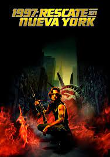

Listado de series y peliculas
by William Hernandez
1997: Rescate en Nueva York
El maestro John Howard Carpenter tan pronto te dirige un clásico imperecedero del cine de terror como
'Halloween' como se saca de la manga una película de acción distópica de la talla de 'Rescate en Nueva York'.
Una clase magistral de economía de recursos, con un uso ejemplar de la urgencia en el guión y un protagonista
irrepetible cuya imagen y chulería le han hecho trascender como icono popular. ¡Larga vida a Serpiente Plissken!.
ver trailer

Ir a pagina index